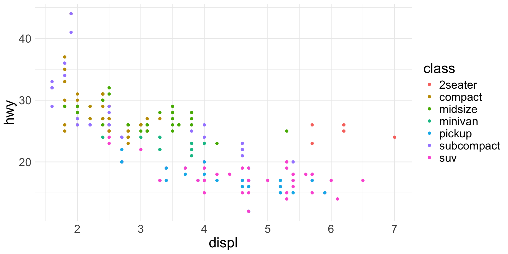
Intro to Data Visualization
visualization basics, ggplot2, grammar of graphics
2026-02-17
Data Visualization Basics
Data Visualization
What is data visualization?
- I’ve made charts and graphs that should finally make it clear. (I’ve prepared a lecture.)
- Graphical representation of quantitative information
- Identify, interpret, communicate patterns
- In academic research, data viz tells (not sells) a story

Core Principles

Clarity
Communicate all – and only – information necessary to tell the story

Simplicity
Minimize distraction & send one message at a time

Accuracy
Use reliable data (garbage in, garbage out) and be faithful to it

Consistency
Represent similar ideas in similar ways & meet audience expectations

Relevance
Know your audience & speak to them
Data Viz in R
Plotting with base R
- Base plots:
- “pen and paper” style
- easy to use, hard to modify
# First create the scatter plot
plot(iris$Sepal.Length, iris$Sepal.Width,
main = "base R: Iris Sepal Length vs Width",
xlab = "Sepal Length",
ylab = "Sepal Width",
col = as.numeric(iris$Species),
pch = 19)
# Add regression lines for each species
species_levels <- levels(iris$Species)
colors <- 1:3
for(i in 1:3) {
subset_data <- iris[iris$Species == species_levels[i], ]
reg <- lm(Sepal.Width ~ Sepal.Length,
data = subset_data)
abline(reg, col = colors[i], lwd = 2)
}
# Add legend
legend("topright",
legend = levels(iris$Species),
col = colors,
pch = 19)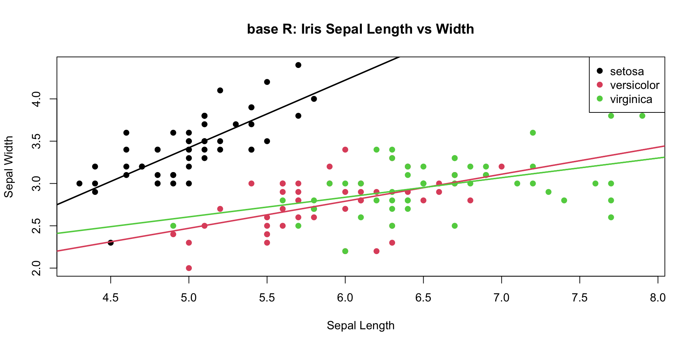
Plotting with lattice
- lattice
- lots of customization
- constrained structure
Plotting with ggplot2
- ggplot2
- flexible and powerful
- tidyverse approach to data science
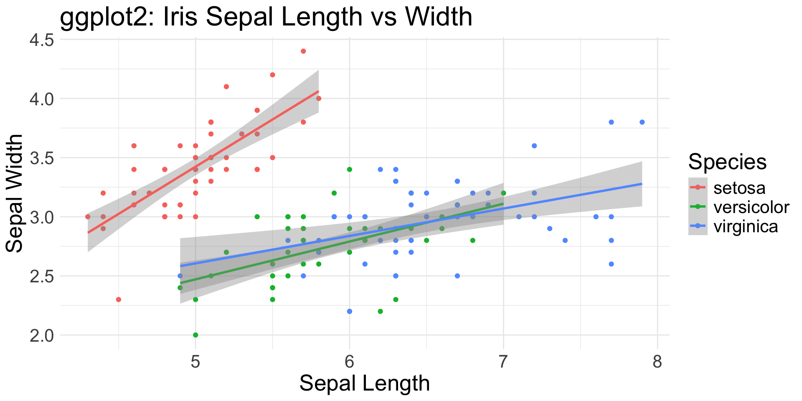
ggplot2
Tidyverse’s ggplot2 package
- easy plotting system for R
- “grammar of graphics” akin to
dplyr’s “grammar for data manipulation”- adding layers ~ adding pipes
- flows best with tidy datasets
- customizable
- modify many visual properties on the fly
- highly flexible
- represent the same data in dramatically different ways
What’s the difference between ggplot and ggplot2?
ggplot() is a function, ggplot2 is a package.
So ggplot2 is version 2?
No.
Customization
ggplot(iris, aes(x = Sepal.Length, y = Sepal.Width,
color = Species)) +
# Add points with custom appearance
geom_point(size = 3, alpha = 0.7) +
# Add regression lines with custom appearance
geom_smooth(method = "lm", se = TRUE, alpha = 0.2,
linewidth = 1.2, linetype = "dashed") +
# Customize colors using a custom palette
scale_color_manual(values =
c("#FF6B6B", "#4ECDC4", "#45B7D1")) +
# Add labels with custom formatting
labs(title = "Sepal Dimensions Across Iris Species",
subtitle = "Comparing Length vs Width with Trend Lines",
x = "Sepal Length (cm)",
y = "Sepal Width (cm)",
caption = "Data: Edgar Anderson's Iris Dataset") +
# Customize theme elements:
# title, axis, legend, panel, borders
theme_minimal() +
theme(
plot.title = element_text(size = 16, face = "bold",
margin = margin(b = 20)),
plot.subtitle = element_text(size = 12, color = "grey40"),
axis.title = element_text(size = 10, face = "bold"),
axis.text = element_text(size = 9),
legend.position = "bottom",
legend.title = element_text(face = "bold"),
legend.background = element_rect(
fill = "white", color = "grey90"),
panel.grid.major = element_line(color = "grey90"),
panel.grid.minor = element_blank(),
plot.background = element_rect(fill = "white", color = NA),
panel.border = element_rect(color = "grey90", fill = NA)
) +
# Set specific axis limits
coord_cartesian(
xlim = c(min(iris$Sepal.Length) - 0.2,
max(iris$Sepal.Length) + 0.2),
ylim = c(min(iris$Sepal.Width) - 0.2,
max(iris$Sepal.Width) + 0.2)
)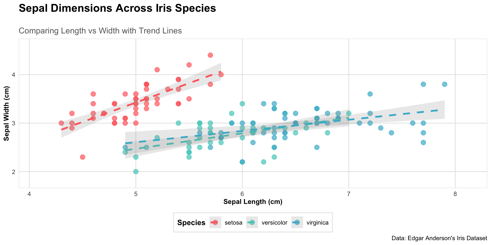
Flexibility
Iris Sepal Length vs Width: Scatter Plot + Regression Line
Flexibility
Iris Sepal Length by Species: Violin + Box Plots
Flexibility
Density Distributions of Iris Measurements: Faceted Histograms
pivot_longer(iris, cols=c(Sepal.Length, Sepal.Width, Petal.Length, Petal.Width),
names_to="Measurement",
values_to="Value") %>%
ggplot(aes(x=Value, fill=Species)) +
geom_histogram(alpha=0.8, bins = 15, # histogram
position = "identity") +
facet_wrap(~Measurement, scales="free") + # subplots
theme_minimal() +
labs(title="Density Distributions of Iris Measurements",
x="Measurement Value (cm)")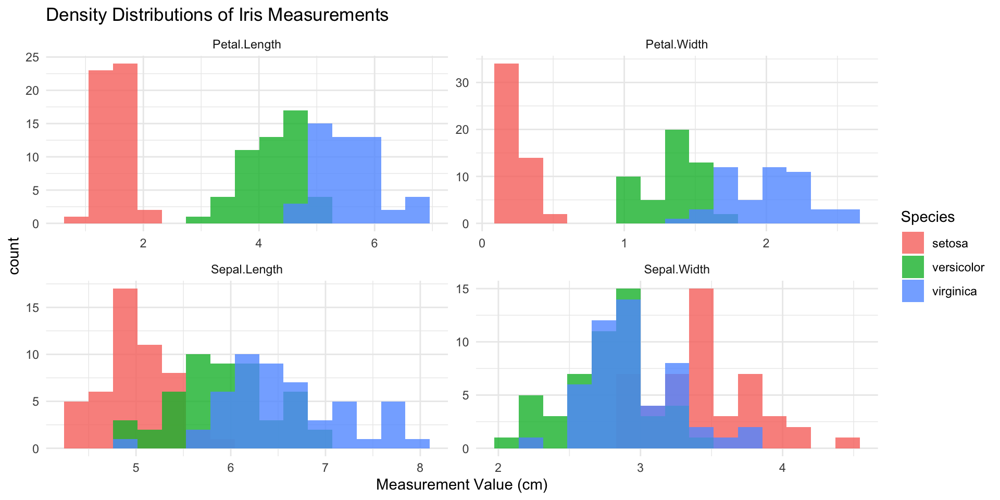
Grammar of Graphics
What do you need to generate this?
Grammatical Elements
- data:
ggplot(data = df)- Tidy dataframe to visualize
- aesthetics:
aes()- Mapping data structures to visual properties
- geometries:
geom_*()- Plotting structures
- statistics:
stat_*()orgeom_*(stat = "...")- Statistical transformations before plotting
- scales:
scale_[aes-type]_[data-type]()- Relationships between mapped data and visual space
- coordinates:
coord()- Spatial structures for visual representation
- facets:
facet_wrap()orfacet_grid()- Subplots based on data mapping
- themes:
theme()- Unmapped, fixed visual properties
Layers
- Layers work together to plot elements
- Not all layers are necessary
- Each can have a powerful effect on outcome
ggplot(data = iris, # Data layer
aes(x = Sepal.Length, # Aesthetics
y = Sepal.Width,
color = Species)) +
geom_point() + # Geometries
stat_smooth(method = "lm") + # Statistics
scale_color_viridis_d() + # Scale
coord_cartesian(xlim = c(4, 8)) + # Coordinates
facet_wrap(~Species) + # Facets
theme_bw() + # Theme
labs(title = "Iris Plot")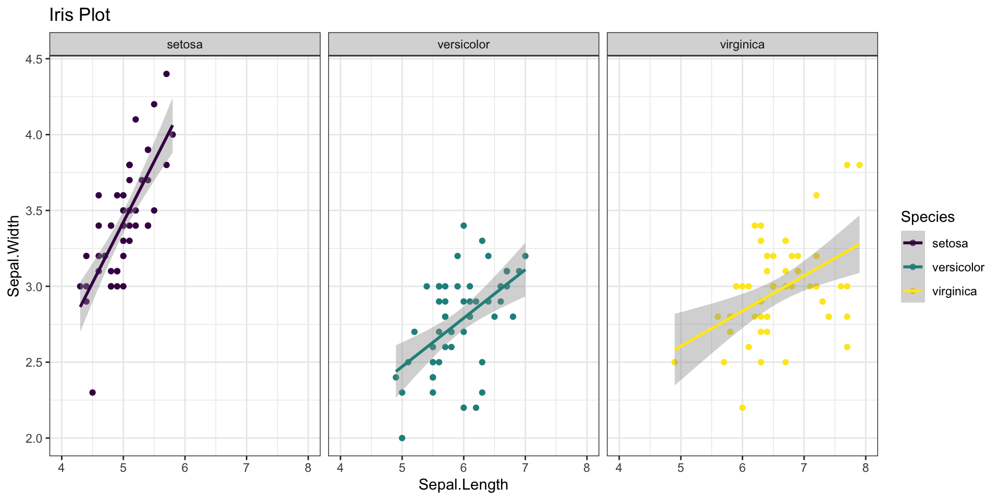
Layers
- Layers work together to plot elements
- Not all layers are necessary
- Each can have a powerful effect on outcome
ggplot(data = iris, # Data layer
aes(x = Sepal.Length, # Aesthetics
y = Sepal.Width,
color = Species)) +
geom_point() + # Geometries
#stat_smooth(method = "lm") + # Statistics
scale_color_viridis_d() + # Scale
coord_cartesian(xlim = c(4, 8)) + # Coordinates
#facet_wrap(~Species) + # Facets
theme_bw() + # Theme
labs(title = "Iris Plot")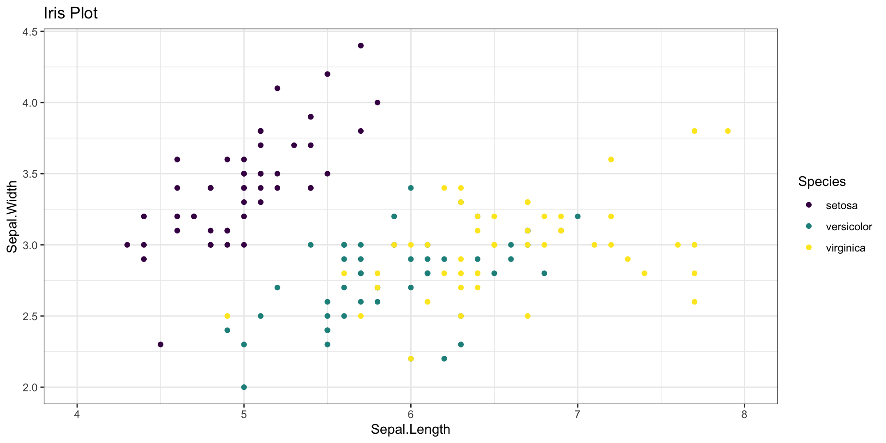
Layers
- Layers work together to plot elements
- Not all layers are necessary
- Each can have a powerful effect on outcome
ggplot(data = iris, # Data layer
aes(x = Sepal.Length, # Aesthetics
y = Sepal.Width,
color = Species)) +
geom_point() + # Geometries
stat_smooth(method = "lm") + # Statistics
#scale_color_viridis_d() + # Scale
#coord_cartesian(xlim = c(4, 8)) + # Coordinates
facet_wrap(~Species) + # Facets
#theme_bw() # Theme
labs(title = "Iris Plot")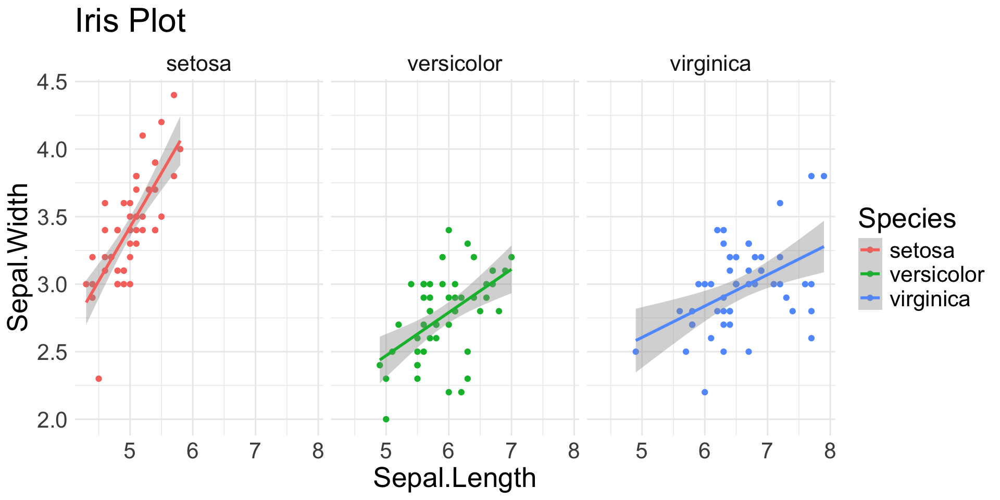
Layered Layers
Grammar of data manipulation
dplyrpipelines- link lines of code (pipes) with
|>or%>% - each line serves 1 purpose
- add, change, remove single lines independently
- modify data sequentially (vs. embedding)
Grammar of graphics
ggplot2layers- link lines of code (layers) with
+ - each line assigns attributes to 1 layer
- add, change, remove single lines independently
- layer data and visuals sequentially (vs. dependently)
Layer Necessity
Essential
- Data
- Aesthetics
- Geometries
Common
- Scales
- Facets
- Themes
Specialized
- Statistics
- Coordinate
Layer: Data
- You need data to plot data.
- It has to be a data frame.
- Helps if it’s tidy.
Layer: Aesthetics (aes)
- Visual properties of a ggplot that are mapped to data
- Dependent on type of plot, e.g.:
- Use the
linetypeaes with a line graph, but not a scatterplot - Use the
fillaes for filled shapes like bar graphs, but not line graphs
- Use the
- Dependent on data type of variable, e.g.:
- Use
shapewith categorical/discrete data, because there is a fixed set of shapes to use - Use
sizewith continuous data, because size itself is continuous and unbounded - Use
colorfor continuous or categorical, because colors can be assigned discretely or generated across a spectrum
- Use
Terminology: aesthetics vs “aesthetic”
fill,color,size, etc. can beaesthetic or aestheticaesthetic: data-dependent visual properties
- defined as arguments in an
aes()function
- defined as arguments in an
Fixed properties use the same elements without data-dependence
- treated as “theme” even if not part of a theme layer
aes reference (1/2)
| Aesthetic | Description | Mapped data | Unmapped specs |
|---|---|---|---|
| x and y (position) | x and y coordinates of the plot. Nearly every plot requires at least one of these “position” aesthetics. | continuous, categorical | n/a |
| group | How observations are grouped together (if not defined with another grouping aes) | categorical | n/a |
| color | Color of points, lines, text, and other 1D shapes. For filled shapes, this will be the outline color. | continuous, categorical | string (color name or hex code) |
| fill | Fill color of 2D shapes like bars, polygons, etc. | continuous, categorical | string (color name or hex code) |
| alpha | Opacity/transparency of any element | continuous | number between 0 and 1 |
aes reference (2/2)
| Aesthetic | Description | Mapped data | Unmapped specs |
|---|---|---|---|
| size | Size of points and width of lines | continuous | numeric values |
| shape | Shape of points, out of 26 options. Default is a solid circle (19) | categorical | integers 0-25 or shape name (string) (view guide) |
| linetype | Type of line, out of 6 options or blank (0). Default is solid line (1). | categorical | integers 0-6 or line name (string) (view guide) |
| linewidth | Width of lines | continuous | numeric values |
| stroke | Width of shape outlines | continuous | numeric values |
| label | Text content | continuous, categorical | strings |
| fontface | Font style for text | categorical | String: “plain”, “bold”, “italic”, or “bold.italic” |
| family | Font family for text | categorical | String with font name |
Spot the aesthetics (1/4)
Spot the aesthetics (2/4)
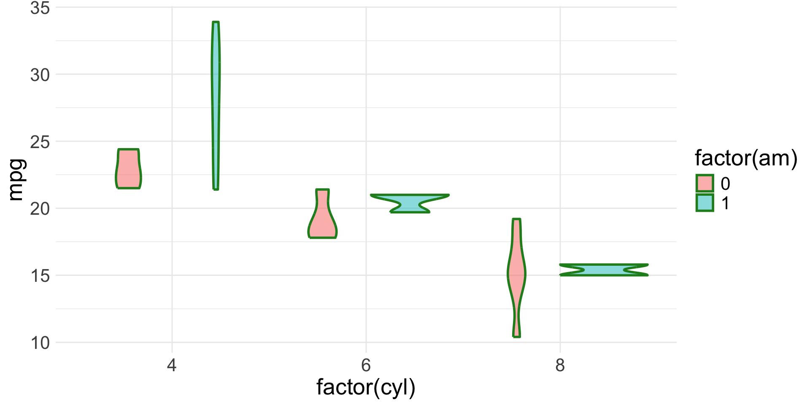
Spot the aesthetics (3/4)
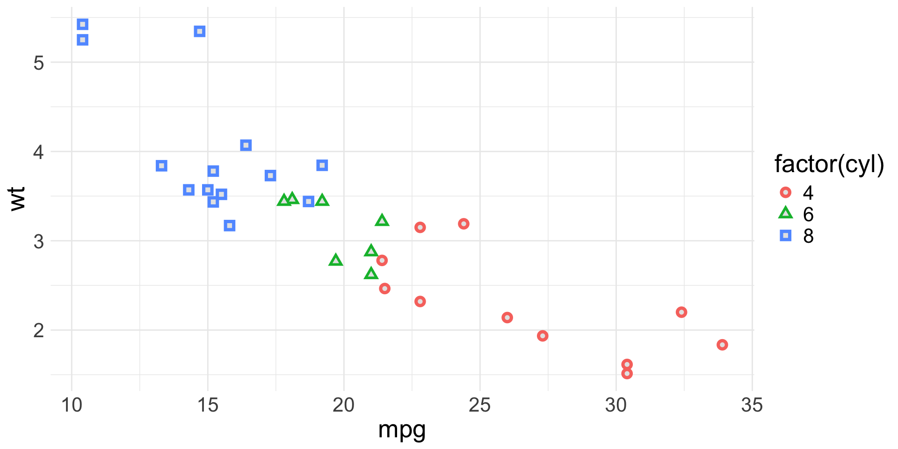
Spot the aesthetics (4/4)
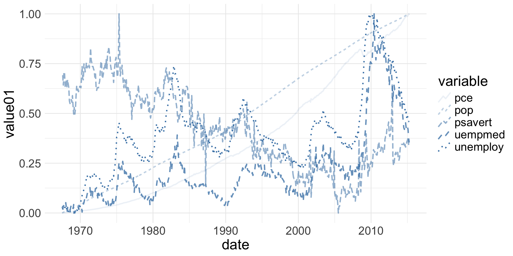
Geometries
- define plot shape (i.e., graph type)
- required aes defined in an
aes()function - required & optional aesthetics depend on type of geom
Scatter plots:
geom_point()- Require 2 continuous variables mapped to
xandy - Accept continuous or categorical variables mapped to
color,shape,size, etc.
Bar charts:
geom_bar()- Require exactly 1 categorical variable mapped to
x - Accept categorical variable mapped to
fill - Do not allow a
ymapping
Geoms

Geom reference (1/2)
| Geom Layer | Variables* | Description | Data Types |
|---|---|---|---|
geom_histogram() |
1 | Creates bins and counts observations within each bin | Continuous x |
geom_density() |
1 | Creates a smoothed density estimate | Continuous x |
geom_boxplot() |
1-2 | Shows distribution summary with quartiles and outliers | Continuous y, Optional categorical x |
geom_violin() |
1-2 | Shows density estimate symmetrically | Continuous y, Categorical x |
geom_bar() |
1-2 | Creates bars with heights proportional to number of cases | Categorical x |
Geom reference (2/2)
| Geom Layer | Variables* | Description | Data Types |
|---|---|---|---|
geom_point() |
2 | Creates a scatter plot | Continuous x & y |
geom_line() |
2 | Connects observations in order | Continuous x & y |
geom_smooth() |
2 | Adds a smoothed conditional mean | Continuous x & y |
geom_area() |
2 | Creates a line plot filled to the x-axis | Continuous x & y |
geom_tile() |
2-3 | Creates rectangles based on x and y positions | Any x & y, Optional fill |
Basic Construction
Pick your plot
ggplot’s flexibility is a double edged sword!- It makes the plot you ask for, not caring if it is confusing, messy, uninterpretable, or pointless
- Recall the “garbage in, garbage out” principle
- Build the plot that matches your data and tells your story
1 Continuous Variable
geom_histogram(): binned distribution
1 Continuous & 1(+) Categorical Variable
geom_boxplot(): distribution with quartiles and outliers
1-2 Categorical Variables
geom_bar(): count of observations in each category
geom_col(): height of bars based on pre-summarized data
iris |>
pivot_longer(
cols = starts_with("Sepal"),
names_to = "Measurement",
values_to = "Value"
) |>
group_by(Species, Measurement) |>
summarise(Value = mean(Value),
.groups = "drop") |>
ggplot(aes(x = Species, y = Value,
fill = Measurement)) +
geom_col(position = "dodge") +
labs(
title = "Mean sepal measurements by species",
x = "Species",
y = "Mean (cm)"
)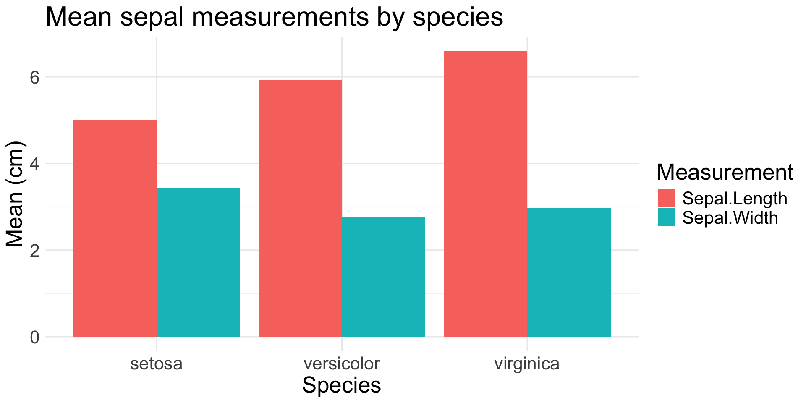
2+ Continuous Variables
geom_point(): scatter plot
geom_jitter(): scatter plot with random noise
geom_smooth(): smoothed mean (e.g., regression line)
2+ Ordered Variables
geom_line(): connects observations in order
D2M-R I